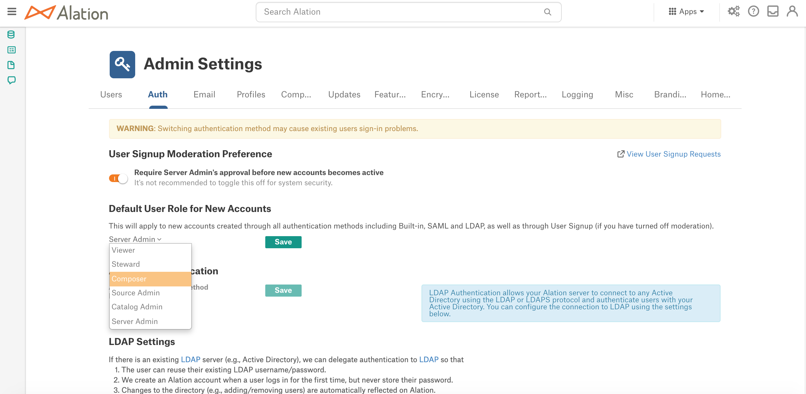

Use Custom Groups to Assign User Roles¶
Alation Cloud Service Applies to Alation Cloud Service instances of Alation
Customer Managed Applies to customer-managed instances of Alation
Applies from release 2021.1
Server Admins can choose to automatically manage user role assignment using Custom Groups when:
LDAP is the authentication method (available from release 2021.1)
SAML is the authentication method (available from release 2021.3)
By default, new Alation users are auto-assigned a default role when they log in to Alation for the first time. A Server Admin must change the role manually in order to grant users the necessary privileges if their role should be other than default. For Alation instances with LDAP or SAML authentication, instead of the manual role assignment (default), an admin can activate assignment of roles using custom groups. This mode of role assignment can be turned on in Admin Settings > Groups with the Use Custom Groups to assign user roles setting.
Note
The default role can be selected in Admin Settings > Authentication. Roles can be manually assigned in Admin Settings > Users. For details, see Assign Roles.
Turning on assignment of user roles using custom groups is accompanied by a number of changes to the user administration process in the Alation Catalog. Alation will begin to automatically assign roles to users based on their membership in a custom group. Server Admins will not be able to manually assign roles to individual users as role assignment will be fully governed by custom group membership. In the Alation UI:
Changing roles for each individual user in Admin Settings > Users will no longer be available.
Assignment of roles via the CSV upload will not be possible.
It will not be possible to change the authentication method in Admin Settings > Authentication. It can only be changed after the Use Custom Groups to assign user roles setting is turned off.
Users without a custom group will be assigned the default role defined in Admin Settings > Authentication.
Note
The default role is assigned only when the auto-suspension option is turned off. Auto-suspension is an additional configuration option that can be enabled in Admin Settings > Groups in order to further automate the process of role assignment. If auto-suspension is on, the default role will not be assigned. Auto-suspension is only available if the authentication method is LDAP. See Use Custom Groups to Manage User Suspension and Activation for more details.
Users who are found in two custom groups mapped onto different roles will receive the role with higher permissions.
If a user is removed from a custom group, they will be assigned the default role or suspended if auto-suspension is enabled.
Role assignment using custom groups works for all types of custom groups: Defined in LDAP, Defined in Alation, and Defined in SCIM.
Enable Role Assignment Using Custom Groups¶
Requires the role of Server Admin
Sign in to Alation and go to the Admin Settings > Groups page.
Create the required number of custom groups and map them onto Alation roles. If custom groups already exist, map the existing groups on to the Alation roles. You can create both LDAP-defined and Alation-defined groups. Although role assignment using custom groups can only be enabled if LDAP is selected to be the authentication method, it will work for both types of custom groups.
On how to create custom groups and map them onto roles, see:
Make sure that at least one custom group is mapped onto the Server Admin role and that this group already has at least one active user. After role assignment using custom groups is enabled, users who do not belong to any custom group will be auto-assigned the default role. Having a custom group with active Server Admins is crucial if you are going to switch between the role assignment methods.
After mapping custom groups onto roles and after you have made sure there are active users in the group mapped onto the Server Admin role, click the toggle Use Custom Groups to assign user roles:
This reveals an info-box that recommends to proceed with caution as you are changing the way roles will be managed in Alation:
Click Save changes in the bottom right corner of the warning box. A confirmation dialog will open:
Click Confirm Changes and in the next pop-up that opens, click Done. It usually takes a few minutes for the changes to apply. During this time, Alation will update all user profiles based on their membership in a custom group and will assign the role mapped onto the group. Users who are not members of any custom group will be assigned the default role. Also, note the changes to the user management process that will take effect:
It will not be possible to assign roles manually in Admin Settings > Users
It will not be possible to assign roles using the upload of user profiles in a CSV file
It will not be possible to change the authentication method in Admin Settings > Authentication.
Refresh the groups page to see the updated role assignments also reflected in the built-in groups.
Turn Off Role Assignment Using Custom Groups¶
To disable role assignment using custom groups, turn off the toggle Use Custom Groups to assign user roles. This returns Alation to the default role assignment method when roles are assigned to individual users on the Admin Settings > Users tab by a Server Admin.
When you disable role assignment using custom groups:
Assignment of roles on the Admin Settings > Users tab and by uploading user profiles from a CSV file becomes available.
The authentication method in Admin Settings > Authentication can be changed.
Users who were previously assigned roles via custom groups will keep their role assignment.
New users who initially log in to Alation will be assigned the default role. A server admin can grant a different role to a user on the Admin Settings > Users tab.
Use Custom Groups to Manage User Suspension and Activation¶
In addition to role assignment using custom groups, an admin can enable the option of using custom groups to manage user suspension and activation. This functionality is only available when the authentication method is LDAP.
With Use Custom Groups to manage user suspension and activation turned on, Alation will further automate the role assignment process. Revoking access from users who are removed from LDAP groups and granting access to users newly added to LDAP groups will not require manual intervention from an admin. If a user is removed from an LDAP group in the AD database, this user will be automatically suspended from Alation. If a new user is added to an LDAP group, then they will be able to log in to Alation with the necessary role, without having to contact an admin to be granted the required access. Enabling the option to use Custom Groups to manage user suspension and activation causes the following changes to the user management process:
Server Admins will not be able to suspend or activate users manually on the Admin Settings > Users page.
Signup Moderation will be disabled in Admin Settings > Authentication
The default role will no longer apply and will be disabled in Admin Settings > Authentication.
All users who are not in a custom group mapped to a role will be suspended.
Suspended and pending users who belong to a custom group that is mapped to a role will be re-activated.
Important
With Use Custom Groups to manage user suspension and activation enabled, a user cannot log in to Alation unless they belong to a Custom Group with an Alation role mapped onto this group.
To enable the option Use Custom Groups to manage user suspension and activation:
In Admin Settings > Groups, toggle on the switch Use Custom Groups to manage user suspension and activation. This reveals an info-box that recommends to proceed with caution as you are changing the admin steps to suspend and activate users:
Click Save changes. Alation will update the status of all existing users and apply the changes to the user management process.
Examples¶
Let’s look at a number of examples in Alation UI.
The screenshot below illustrates a case when Use Custom Groups to manage user suspension and activation is disabled. Let’s focus on the following users:
Riemann: user is active and belongs to a custom group Data Scientists that is mapped to the Composer role
Boyle: user is active, has the role of a Server Admin but does not belong to any custom group
Gauss: user is currently suspended, but in the LDAP directory, this user belongs to a group that also exists in Alation as a custom LDAP group.

When Use Custom Groups to manage user suspension and activation is disabled, in Admin Settings > Authentication, the User Signup Moderation Preference setting and the default Alation role can be changed:
After Use Custom Groups to manage user suspension and activation is turned on, the status of the users will change:
Boyle: user is auto-suspended because he is not a member of a custom group with an Alation role mapped onto it
Gauss: user is auto-reactivated and placed into the custom group that corresponds to his LDAP group
Riemann: no changes
After Use Custom Groups to manage user suspension and activation is turned on, in Admin Settings > Authentication, User Signup Moderation Preference and the default Alation role become disabled:
Turn Off Using Custom Groups to Manage User Suspension and Activation¶
To disable the option Use Custom Groups to manage user suspension and activation, turn off the corresponding toggle on the Admin Settings > Groups page and save the changes:
Alation will return to the default way of suspending and activating users:
Alation will stop automatically suspending all users who do not belong to a custom group that is mapped to a role.
Alation will stop automatically activating pending users and suspended users who belong to a custom group that is mapped to a role.
Default role selection will be enabled on the Admins Settings > Authentication page and the default role will be applied to any new unassigned users.
Signup moderation can be enabled in Admins Settings > Authentication.
Admins will be able to manually suspend users in Admins Settings > Users.
Important
Users who were previously suspended or activated by this feature will stay suspended or activated. Ad admin must manually reactivate or suspend these users, if necessary.